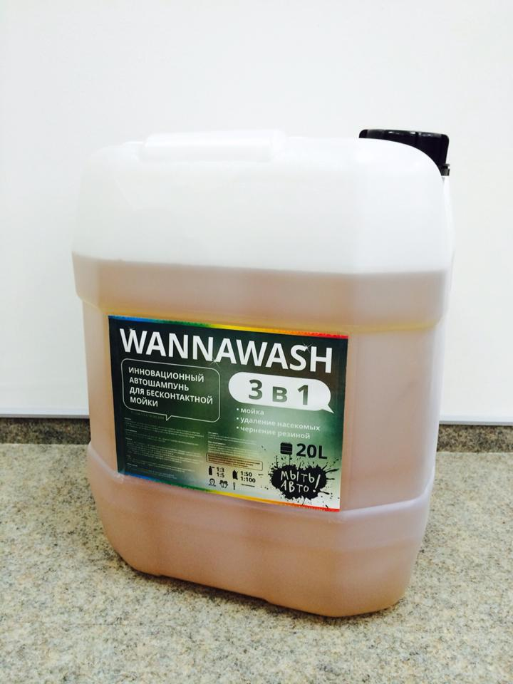

Назад
Виды услуг
Вперед
Wannawash 3в1
Инновационный автошампунь для бесконтактной мойки автомобилей Wannawash 3в1, отличается от других бесконтактных средств мойки в том, что он одновременно моет, хорошо удаляет насекомых и чернит резину.Wannawash 3в1 это концентрированное средство для мойки автомобилей без механического воздействия. Образует активную пену, эффективно отделяющую грязь, масло и соли с поверхности автомобиля. Не оказывает вредного воздействия на пластик, резину, лакокрасочное и (или) хромированное покрытие автомобиля. Позволяет получить чистую, обезжиренную поверхность без разводов.
 Разведение:
С использованием пенокомплекта – залить в бачок средство для бесконтактной мойки в пропорции с водой от 1:3 до 1:5 ( в зависимости от качества воды, загрязнения автомобиля). Нанести пену на поверхность автомобиля и выдержать в течении 2-3 минут. После активации смыть пену струей воды из аппарата высокого давления.
С использованием пеногенератора – залить в пеногенератор средство для бесконтактной мойки в пропорции с водой от 1:50 до 1:80 (в зависимости от качества воды, загрязнения автомобиля). Нанести пену на поверхность автомобиля и выдержать в течении 2-3 минут. После активации смыть пену струей воды из аппарата высокого давления.
Состав:
Анионных поверхностно-активных веществ меньше 15, неионогенных поверхностно-активных веществ меньше 15, комплексообразователи меньше 15, гидроксид натрия, ингибиторы коррозии, подготовленная вода.
 Заказать пробную канистру можно по тел.:
Заказать пробную канистру можно по тел.:+7(962)564-23-54
Ищите на мойках города!
Также рекомендуем
Наномойка Антидождь Инновационный автошампунь Полировка «Жидкое стекло»